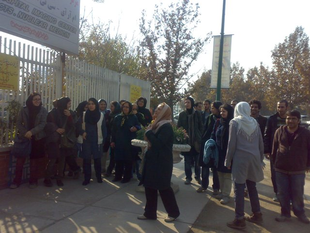
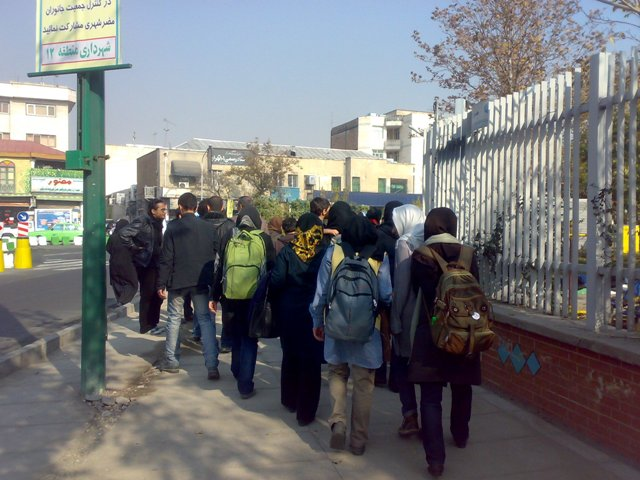
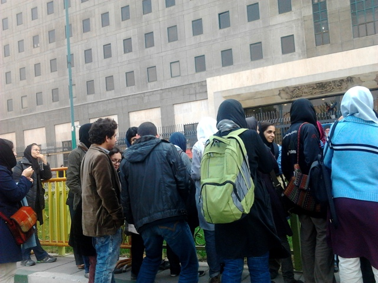

|
|

ادامه پيگيري هاي و ضعيت نسرين ستوده از سوي فعالان زن این بار از مجلس
سه شنبه14 آذر 1391
تغییر برای برابری: صبح امروز،سهشنبه 13 آذر 91 حدود 50 نفر ازفعالان زن به همراه آقای رضا خندان همسر نسرين ستوده در راستاي پيگيري وضعيت اين وكيل پايه يك دادگستري و فعال حقوق زنان و درخواست به حق او مبني بر رفع ممنوعالخروج بودن دختر 12 سالهاش مهراوه و همسرش به محل ملاقات عمومي نمايندگان مجلس شوراي اسلامي رفتند و خواستار ملاقات با تعدادي از نمايندگان مجلس شدند.

با پيگيريهاي صورت گرفته عليرغم برخي از محدوديتهاي ايجاد شده از سوي حراست مجلس ، فعالان زن توانستند به دفتر برخي از نمايندگان مجلس از جمله حجتالاسلام و المسلمين ابوترابي نايب رييس دوم مجلس، پزشكيان نماينده مردم تبريز، علي مطهري نماينده مردم تهران، مصباحيمقدم،نمایندهی نجف آباد، نمیاندهی گیلان و بروند و نامههاي خود را به منشيها و مسئول دفتران آنها ارائه كنندو با برخی دیگر از جمله تابش نمایندهی اردکان و محجوب نمایندهی تهران دیدار کنندو قولهای مساعدی مبنی بر پیگیری وضعیت ستوده از آنها بگیرند.

به دلیل حضور نمایندگان در صحن علنی و برخی ممانعتهای ایجاد شده توسط حراست مجلس دیدار با دیگر نمایندگان میسر نشد.
در ادامهاین فعالان به دفتر علي لاريجاني رييس مجلس شوراي اسلامي رفتند وخواستار ديدار با وي شدند كه يكي از مسئولان دفتر وي به آنهااعلام كرد كه لاريجاني به عنوان رييس قوه مقننه ديدار مردمي ندارد و در نهايت پذيرفت كه نامه فعالان زن را عصر امروز به دست روساي كميسيون امنيت ملي و كميسيون اصل 90 برساند.
بنابراين گزارش، فعالان زن در مرحله سوم پيگيريهاي خود به درب شمال مجلس رفتند و در آنجا خواستار ديدار با تعدادي از نمايندگان عضو كميسيون امنيت ملي و سياست خارجي و مصاحبه با خبرنگاران شدند.

فعالان جنبش زنان ایران و دوستان و همراهان نسرین ستوده در دو روز گذشته نيز به دفتر دادستاني و قوه قضاييه مراجعه و پيگير وضعيت نسرين ستوده و تلاش براي محقق كردن خواستههاي وي جهت شكستن اعتصاب غذايياش كرده بودند.
نسرين ستوده بيش از پنجاه روز است كه در اعتصاب غذا به سر ميبرد و وضعيت جسماني مناسبي ندارد و يكي از خواستههاي جديد فعالان در كنار رفع ممنوعالخروج بودن دختر وي، انتقال نسرين ستوده به يكي از بيمارستانهاي مجهز تهران است.